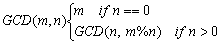
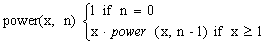
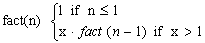
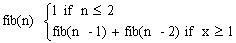

Note: You can select and do some questions according to your ability only. We would like to note you that the more questions you do the better for you in doing final practical and writing exams.
Writing exercises
1. Give the sequence of argument values that result when the
following program is invoked for each of the integers 1 through 9.
int puzzle(int n)
{if (n == 1) return 1;
if (n % 2 == 0)
return puzzle(n/2);
else
return puzzle(3*n+1);
}
2. Use the following function puzzle(..) to answer problems 2.1
- 2.3.
int puzzle(int base, int limit)
{ //base and limit are nonnegative
numbers
if(base > limit)
return(-1);
else if(base == limit)
return 1;
else
return(base * puzzle(base +
1, limit));
}
2.1 Identify the base case(s) of function puzzle(..)
2.2 Identify the recursive case(s) of function puzzle(..)
2.3 Show what would be displayed by the following calls.
a. System.out.print(puzzle(14,10));
b. System.out.print(puzzle(4,7));
c. System.out.print(puzzle(0,0));
3. Show the output that will be displayed by the call show(123);
void show(int n)
{ if(n>0) show(n/10);
System.out.print((n%10));
}
4. Show the output that will be displayed by the call show(134);
void show(int n)
{ System.out.print(n%10);
if(n>0) show(n/10);
}
5. Show the output that will be displayed by the call show(145);
void show( int n)
{ System.out.print((n%10));
if(n>0) show(n/10);
System.out.print((n%10));
}
6. Complete the Java code to recursively evaluate the sum: sum = 1
+ 1/2 + 1/3 +...+1/n, n >= 1.
double sum(int
n)
// n>=1
{
if (___________)
return _____________;
return ______ + sum(______);
}
7. Consider the following recursive function.
|
int mystery(int a, int b) |
a. What
values of a and b are directly handled by the stopping (base) case?
b. What are the values of mystery(2,
25) and mystery(3, 11)? Given positive integers a and b,
describe what value mystery(a, b) computes.
Answer the same question, but replace + with *.
c. For the call mystery(3, 7), how many calls to mystery will be
made, including the original call?
8. Consider the following recursive function.
|
void ex237(int n) |
Give the sequence of integers printed by a
call to ex237(6).
9. Consider the following recursive function:
|
String ex238(int n) |
Give the value of ex238(6).
10. Prove by induction that the minimum possible number of moves needed to
solve the towers of Hanoi satisfies the same recurrence as the number of moves
used by our recursive solution.
Practical exercises
Write Java programs to perfom the following tasks:
1. Write a recursive function that computes the sum of all numbers
from 1 to n, where n is given as parameter.
//return the sum 1+ 2+ 3+ ...+ n
int sum(int n)
2. Write a recursive function that finds and returns the minimum
element in an array, where the array and its size are given as parameters.
//return the minimum element in a[]
int findmin(int a[], int n)
3. Write a recursive function that computes and returns the sum of
all elements in an array, where the array and its size are given as parameters.
//return the sum of all elements in a[]
int findsum(int a[], int n)
4. Write a recursive function that determines whether an array is a
palindrome, where the array and its size are given as parameters.
//returns 1 if a[] is a palindrome, 0 otherwise. The string a is palindrome if
it is the same as its reverse.
int ispalindrome(char a[], int n)
5. Write a recursive function that searches for a target in a
sorted array using binay search, where the array, its size and the target are
given as parameters.
6. Implement the Greatest Common Divisor algorithm as recursive method
GCD. Use recursion. Do NOT use a loop.

7. Implement the power function recursively

8. Implement the factorial function recursively as fact

9. Implement Fibonacci recursively as f

10. Write recursive method addReciprocals that takes an
integer as a parameter and returns the sum of the first n reciprocals.
addReciprocals(n) returns (1.0 + 1.0/2.0 + 1.0/3.0 + 1.0/4.0 + ... + 1.0/n).
11. Stirling numbers: A stirling number of the first kind is defined as follows
Write a recursive routine to calculate
stirling numbers of the first kind.
12. Tree height. Given a labeled binary tree (represented by a
pointer to a TreeNode) calculate its height.
13. Tree size. Given a labeled binary tree (represented by a
pointer to a TreeNode) calculate its size.